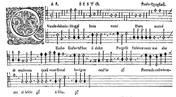

El madrigal es una composición de tres a seis voces sobre un texto profano, a menudo en italiano. Tuvo su máximo auge en el Renacimiento y primer Barroco. Musicalmente reconoce orígenes en la frottola, posee una letra en lengua italiana de temática profana, armonía contrapuntística, y carácter popular.
Generalmente el nombre se asocia al Madrigal de fines del siglo XII y principios del siglo XIV en Italia, compuestos en su mayoría para voces a capella, y en algunos casos con instrumentos doblando las partes vocales.
UN EJEMPLO DE MADRIGAL SERIA: